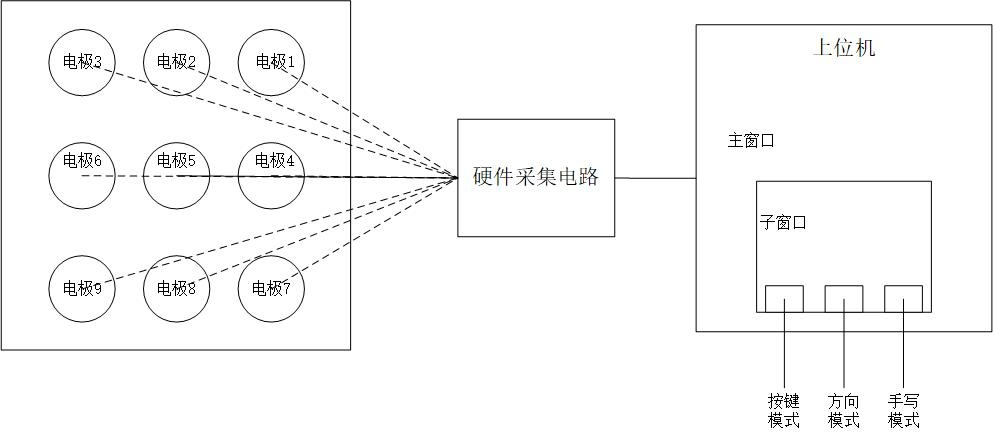
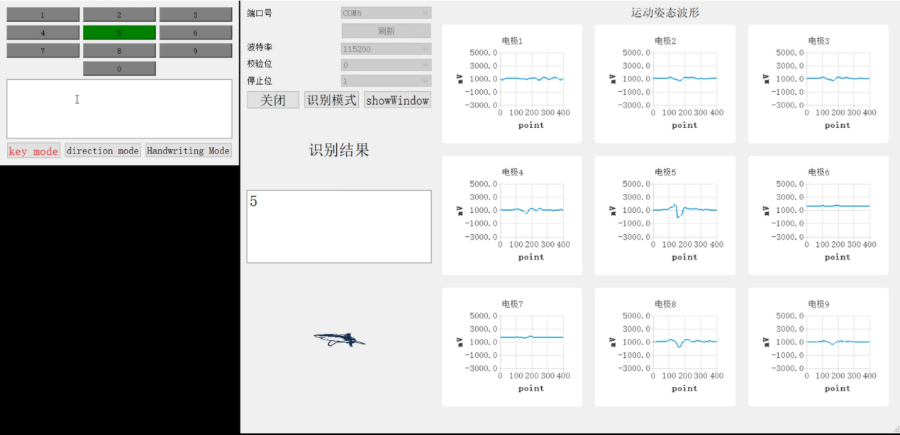

一、地震探测
基于电荷感应的地震波监测系统，通过感应地震时传播的震动信号，通过一定的处理，可以提取出目标震动信息。在信号采集系统上加以GPS高精度授时系统与数据存储系统，整合为完整的地震波监测系统。同时，通过多个监测点的数据分析，可以实现震源位置、深度、时间的确定，震级评估等。其特点如下：
1、基于本实验室自主研发的电荷感知芯片，检测大地震动信息
2、可阵列化、地面检测
图1 自研设备采集到的3次震动信息
图2 设备信号对比，红色为自研设备，黑色为专业设备
二、姿态识别
-
>>数字9宫格
包括9个电极、硬件采集电路、上位机。9个电极和硬件采集电路用于采集人指尖的运动信号；上位机，包括手写、方向、按键三种工作模式，手写模式下对指尖在数字极板阵列上方描绘的数字轨迹进行数字识别，包括数字0-9，方向模式下对指尖在数字极板阵列上方描绘的方向轨迹进行方向识别，包括上下左右四个方向，按键模式下对指尖在数字极板阵列上方选中的按键进行识别，包括数字极板阵列上的九个按键。整个系统可非接触识别指尖运动方向，且抗遮挡、成本低、系统简单。
流程图
操作界面及识别结果如下：

三、电场探测
本实验室自主研发的小体积低频宽带电场仪，具有如下特征：
1、频率探测范围宽，使用场景广，可探测空气、大气或海水中强度20 μV/m至60 kV/m、频率1 Hz至16 kHz范围内的电场信号
2、基于自主研发的电荷感知芯片，使用多种增益电极探测电场强度，灵敏度高
3、上位机实时显示电场波形和FFT频谱
电场仪上位机
电场仪设备
四、运动感知智能灯控
技术优势一:实现大于3m范围全方位探测，不受噪音，环境热源，物体遮挡等影响，全天候适用。
技术优势二:具有低成本、节能显著优势，可大大降低每年1000多亿元照明费用。
成果展示